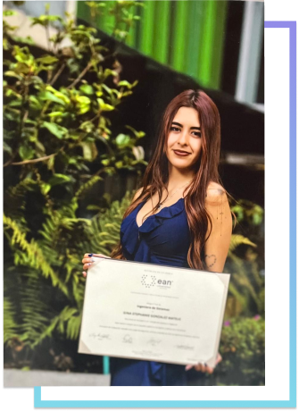

Bogotá, Colombia
Turning fragmented data
into strategic decisions.
Convierto datos fragmentados
en decisiones estratégicas.
Senior analyst building Single-Source-of-Truth ecosystems with Power BI, Python and AI. Currently at DiDi Global — previously OPPO, Concentrix. Analista senior construyendo ecosistemas Single-Source-of-Truth con Power BI, Python e IA. Actualmente en DiDi Global — antes OPPO, Concentrix.
Two engineering degrees. One obsession: making data tell the truth. Dos títulos de ingeniería. Una obsesión: hacer que los datos digan la verdad.
I started in chemical engineering learning to model physical systems — mass balances, kinetics, thermodynamics. Then I pivoted to systems engineering and discovered you can apply the same rigour to data: model the flow, identify the constraints, optimise the output. Empecé en ingeniería química aprendiendo a modelar sistemas físicos — balances de masa, cinética, termodinámica. Luego cambié a ingeniería de sistemas y descubrí que puedes aplicar el mismo rigor a los datos: modela el flujo, identifica las restricciones, optimiza la salida.
Now I architect end-to-end data solutions across industries. The chemical-engineer brain keeps me honest about uncertainty. The software-engineer brain keeps me honest about scale. Ahora diseño soluciones de datos de extremo a extremo en distintas industrias. La mente de ingeniera química me mantiene honesta con la incertidumbre. La mente de ingeniera de sistemas me mantiene honesta con la escala.
Download CV Descargar CV